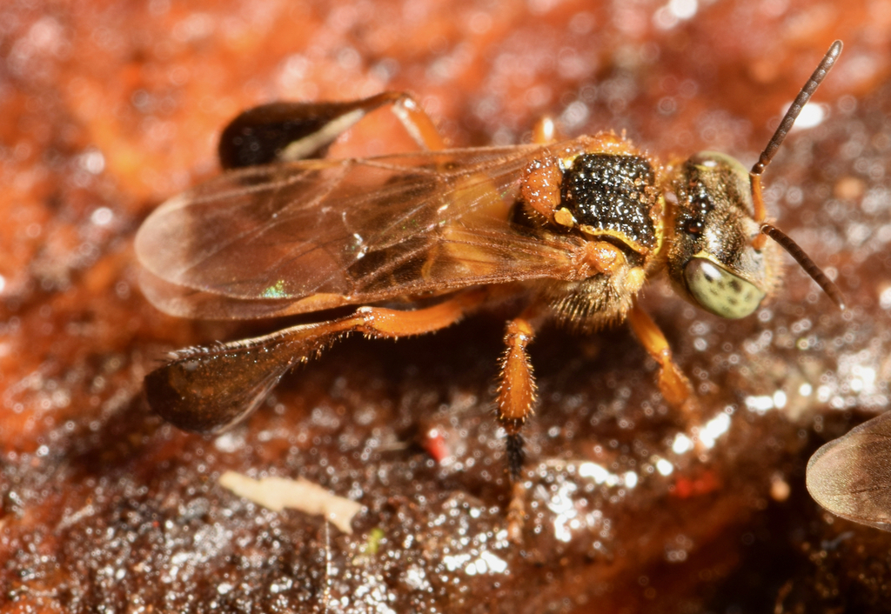
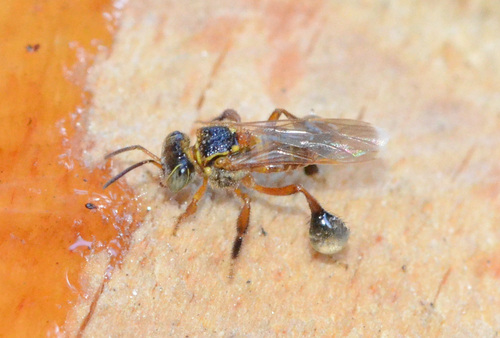

Características Gerais e Hábitos
Onde se encontra
A abelha-marmelada (Frieseomelitta varia) é uma abelha nativa do Brasil, pois tem área de ocorrência do sudoeste Mexicano ao sudeste brasileiro,
encontrada em florestas da Amazônia, em vegetação de caatinga e no cerrado.

Alimentação: Se alimentam de néctar e pólen, contribuindo para a polinização enquanto coletam recursos.
Forrageamento: São ativas durante o dia, voando em busca de flores para coletar alimento.

Reprodução: A rainha é responsável pela postura de ovos, enquanto as operárias cuidam da colônia.
Comunicação: Utilizam feromônios e comportamentos de dança para se comunicar e informar sobre fontes de alimento.
Sociabilidade: Vivem em colônias sociais, cooperando na construção do ninho, cuidado com as larvas e coleta de alimento.
Ninho: Construem ninhos em locais protegidos, como troncos ocos ou buracos em árvores, usando cera e barro.